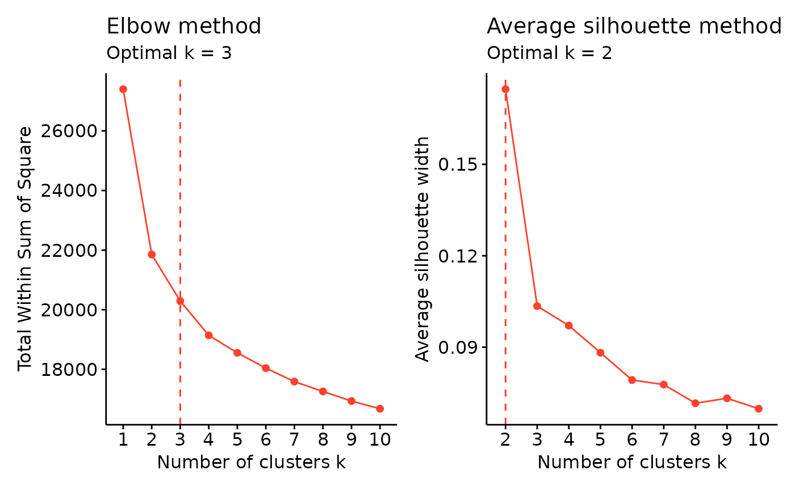

Runs several methods to determine the optimal number of clusters (k) and summarizes their suggestions, following the approach described by datanovia:
Arguments
- x
The output of
seg_prep_data()(recommended), or a data frame or numeric matrix with already prepared clustering variables (no missing values).- methods
Methods to run. Defaults to all of
"wss","silhouette","gap_stat"and"nbclust".- cluster_method
Clustering algorithm used to evaluate the solutions:
"kmeans"(default,stats::kmeans()),"hclust"(hierarchical clustering viafactoextra::hcut()) or"pam"(partitioning around medoids,cluster::pam()). k-means always uses Euclidean distances. NbClust does not support"pam"and is skipped in that case.- k_max
Maximum number of clusters to consider. Defaults to 10.
- nstart
Number of random starts for k-means (WSS, silhouette). Defaults to 25.
- nboot
Number of bootstrap samples for the gap statistic. Defaults to 50 (factoextra uses 100), which keeps the computation time moderate.
- nstart_gap
Number of random starts for k-means within the gap statistic, which runs k-means
k_max * (nboot + 1)times. Defaults to 10.- nbclust_index
Index (or indices) computed by NbClust. Defaults to
"all"(26 indices). SeeNbClust::NbClust()for other options, e.g."alllong"(30 indices, much slower).- hc_method
Agglomeration method for
cluster_method = "hclust". Defaults to"ward.D2".- seed
Random seed. The global random seed is left untouched. Defaults to 123.
- verbose
Logical. Whether to show progress and print the results. Defaults to
TRUE.
Value
An object of class seg_optimal, a list with the elements:
summary: tibble with the suggested number of clusters per method.plot: all plots combined.plots: named list with the individual plots (ggplot objects).results: named list with the full results of the individual methods.settings: list of the settings used.
Details
"wss": Elbow method on the total within-cluster sum of squares, seeseg_nbclust_wss()."silhouette": Average silhouette width, seeseg_nbclust_silhouette()."gap_stat": Gap statistic, seeseg_nbclust_gap()."nbclust": Majority vote of up to 26 indices from the NbClust package, seeseg_nbclust_indices().
The methods often disagree. Use the suggestions as a starting point and compare a few candidate solutions in terms of interpretability, segment sizes and usefulness for the client.
Computation time
The defaults are chosen to keep the computation time moderate (about one
minute for 1,400 respondents and 20 variables with all methods). The gap
statistic (nboot, nstart_gap) and NbClust are by far the most expensive
methods; drop them from methods for quick explorations.
Examples
# \donttest{
prep <- seg_prep_data(
sm_synthetic,
vars = dplyr::starts_with("F50_0_"),
missing = "mice",
max_missing_prop = 0.2,
verbose = FALSE
)
# Quick exploration without the expensive methods
optimal <- seg_optimal_clusters(prep, methods = c("wss", "silhouette"))
#> ℹ Running "wss"
#> ✔ Running "wss" [1s]
#>
#> ℹ Running "silhouette"
#> ✔ Running "silhouette" [850ms]
#>
#>
#> ── Optimal number of clusters (kmeans) ──
#>
#> • wss: k = 3 (elbow of the within-cluster sum of squares)
#> • silhouette: k = 2 (maximum average silhouette width)
#> Most frequent suggestion: k = 2 and 3 (1 of 2 methods). See the plots in
#> `$plot`.
optimal$plot

# }